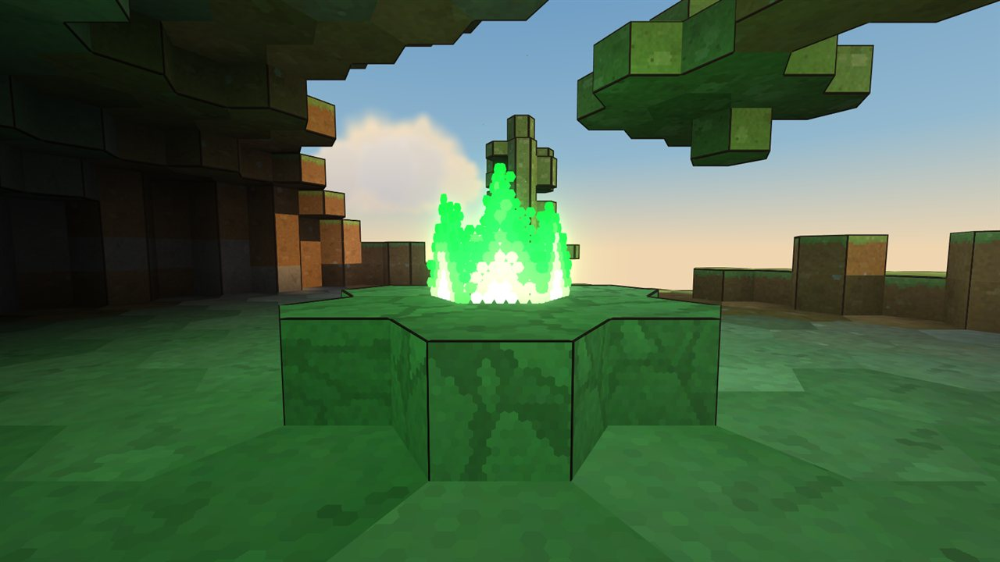

An endless hexagon world
Every world is generated from a seed and never ends: islands of hexagon pillars, mountains, rivers, forests and caves. Every block can be mined and placed. Build anything you like.
A sandbox game in an endless world made of hexagons. Build and explore freely, or follow the story: fight the divers, board the trader ships, face the bell creature and wake the chained golem in the castle ruin.
Help shape Jayraid: test every new version first and tell me what you think. Each tester gets a personal code for the launcher.
You are tester #1. Your code:
JAYR-XXXX-XXXX-XXXX
Unpack the launcher, start it and type in your code, or drag the code file into its window. Keep the code to yourself.
Jayraid Launcher · Windows 10/11
What you need: Windows 10 or 11 and the free .NET 8 Desktop Runtime from Microsoft (a one time install, choose "Desktop Runtime" for Windows x64). Once installed, the launcher fetches every new version by itself, with a big UPDATE button.
No place left? Play the browser preview: one island, no download.
Jayraid is a sandbox game in an endless world made of hexagons. Explore, mine and build whatever you want, as long as you want. If you are looking for a goal, there is a story with two bosses and a real ending.
Every world is generated from a seed and never ends: islands of hexagon pillars, mountains, rivers, forests and caves. Every block can be mined and placed. Build anything you like.

The traders sail the seas on their ships and are friendly to you. The divers live in camps with watchtowers and attack on sight. Ships and towers even shell each other.

On every trader ship waddles a giant bell. It guards a golden magic wand. Strike it and it rings sound waves that hurt. Defeat it, and the traders turn against you.

Deep inside the mountains burn green fires, guarded by rotten divers. A green wand from the traders shows you the way. Take a torch, it is dark down there.

Sometimes a defeated rotten diver turns blue and stands up again. It follows you from then on. Hand it a sabre and it fights at your side.

In old castle ruins a stone giant sleeps in chains. Wake it and the boss fight begins: knock it down with the sabre, then hit it with the golden wand. Its treasure chest ends the story.
Click CLAIM A PLACE at the top of this page. Your browser saves two files: Jayraid-Tester-Code.txt with your personal code, and Jayraid-Launcher.zip.
Install the free .NET 8 Desktop Runtime if you do not have it. Unpack the zip into a folder of its own, for example Documents\Jayraid.
Open Jayraid-Launcher.exe. If Windows warns you, click More info, then Run anyway. Type in your code, or drag the code file into the launcher window.
Click INSTALL, then PLAY. The launcher checks every file against the signed version list before it starts the game.
New versions arrive by themselves: on start the launcher checks this site. If there is something new, the big button turns into UPDATE. One click and you are done. The launcher updates itself the same way.